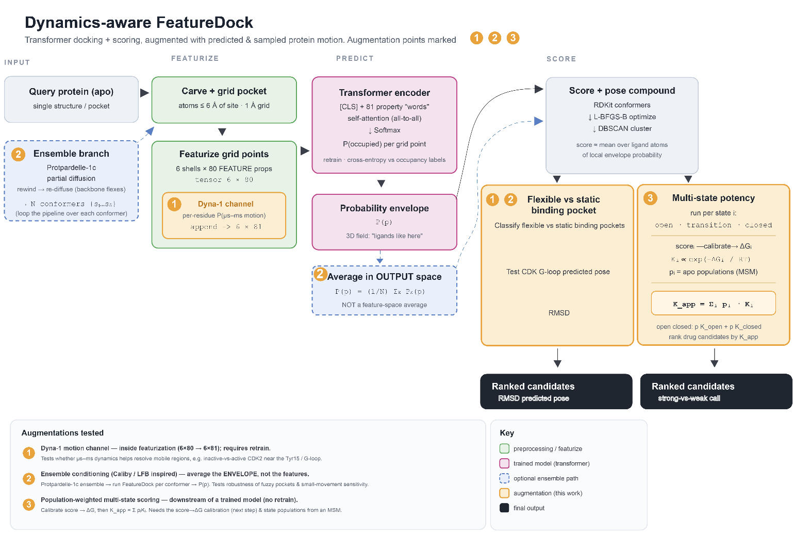
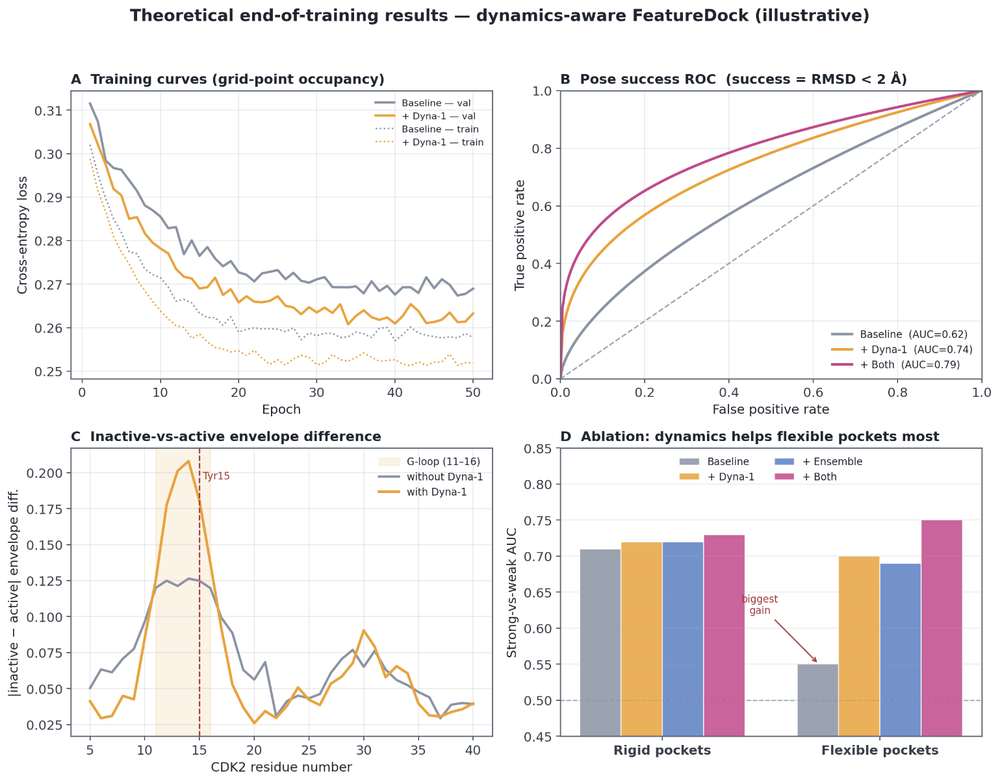
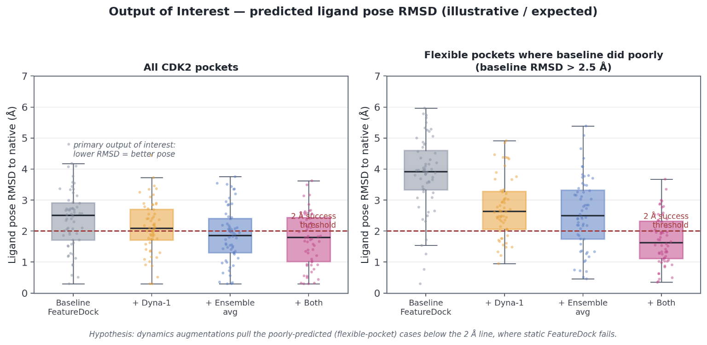

Injecting predicted and sampled protein motion into structure-based docking — so a docking model can reason about pockets that move, not just the single frozen structure it was handed.
What the project is, in one sentence.
Take FeatureDock — a transformer that predicts where a ligand will sit in a protein pocket — and make it dynamics-aware: teach it not just the static shape of the pocket but how the pocket moves, so it docks more reliably in flexible pockets where a single crystal structure misleads it.
FeatureDock, as published, reads one static structure and predicts a “ligand-occupancy probability envelope” over grid points in the pocket — a 3D cloud of “a ligand atom probably goes here.” That works when the pocket is rigid. It struggles when the pocket breathes on the µs–ms timescale — exactly the motions a crystal structure cannot show. The running example is CDK2’s G-loop / Tyr15 region, which rearranges between the kinase’s active and inactive states. The hypothesis: feeding the model information about which residues move lets it resolve those cases.
Transformer docking + scoring, augmented with predicted & sampled motion at three stages of the pipeline.

Each injects protein motion at a different stage — and they escalate in cost.
FeatureDock describes each grid point with a 6 shells × 80
physicochemical FEATURE tensor. This appends one more channel — Dyna-1’s
per-residue µs–ms motion probability — making it 6 × 81, then retrains
the transformer. The central experiment: does telling the model which residues move help it
dock?
Instead of one structure, generate a Protpardelle-1c partial-diffusion ensemble of the pocket, run FeatureDock on each conformer, and average the resulting envelopes in output space (not by averaging input features). Tests robustness to small backbone movements — the idea adapted from ensemble conditioning in Caliby / Likelihood-Fitness Bridging.
Score each conformational state separately, then combine them the way physics prescribes — a population-weighted sum of association constants:
with pi the state populations (from the ensemble, or a Markov State Model). For a two-state open⇆closed pocket this is exactly Kapp = popen·Kopen + pclosed·Kclosed. Sits entirely downstream of a trained model; needs a score→pseudo-ΔG calibration.


Each open-source repo maps onto a specific role in the pipeline.
| Tool | Role | Augmentation |
|---|---|---|
| FeatureDock | The base model being rewritten & retrained | all |
| Dyna-1 | Produces the per-residue µs–ms motion channel | ① |
| Protpardelle-1c | Generates the conformer ensembles | ② ③ |
Base training set: PDBBind v2020 refined (~4,515 preprocessed cocrystals), reused with the original 90% MMseqs2 cluster split so homologs never straddle train/val. Grid points (millions) are the trainable records; the structure is the sampling unit for class balancing.
Primary metric: ligand-pose RMSD to native (2 Å success threshold). Secondary:
AUC / KL for strong-vs-weak discrimination, using ChEMBL potencies
(CDK2 = CHEMBL301, ACE = CHEMBL1808), stratified by pocket flexibility.
The environment ships all three tools in one place.
# clone this repo (contains featuredock / Dyna-1 / protpardelle-1c) git clone https://github.com/<you>/dynamics-aware-featuredock.git cd dynamics-aware-featuredock # build the env (Python 3.11, modern PyTorch; see setup script) bash setup_hackathon_mamba.sh micromamba activate Hackathon
torchtext is dropped (unused, breaks on
modern torch).